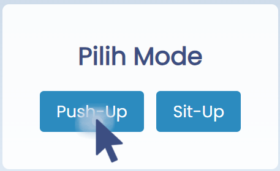
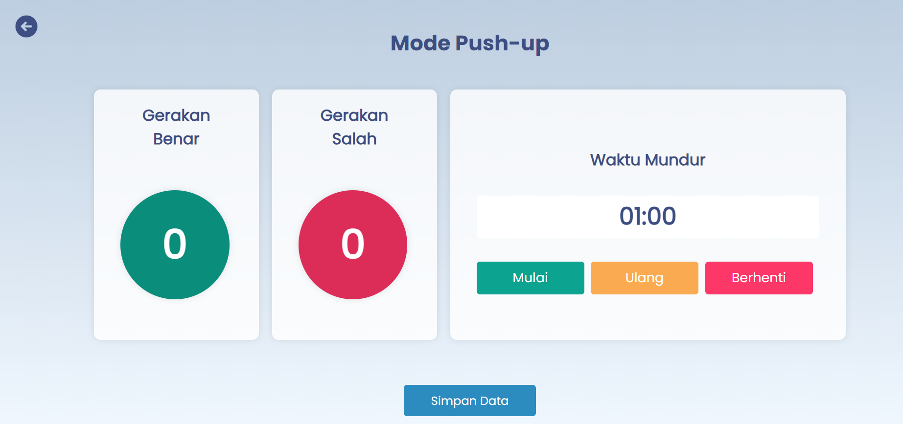

Pilih mode push-up atau sit-up dengan menekan tombol yang sesuai.
Jika memilih mode push-up, pasang masing-masing alat seperti pada gambar dibawah ini.
Sebelum memulai, lakukanlah gerakan mode yang sudah terpilih untuk kalibrasi. Lalu tekanlah tombol "Mulai" dan lakukan gerakan hingga waktu hitung mundur selesai.
Jika memilih mode sit-up, pasang masing-masing alat seperti pada gambar dibawah ini.
Sebelum memulai, lakukanlah gerakan mode yang sudah terpilih untuk kalibrasi. Lalu tekanlah tombol "Mulai" dan lakukan gerakan hingga waktu hitung mundur selesai.
Anda bisa memilih tombol lainnya pada halaman counter.
Jika Anda selesai, tekan ikon "Kembali" untuk kembali ke halaman utama.